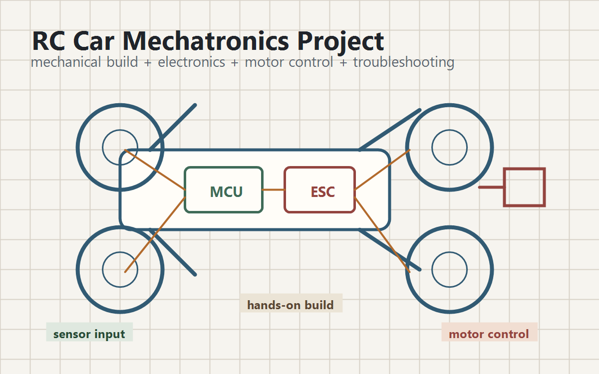

Projects
Cal Poly mechatronics project
RC Car Mechatronics Project
Built and integrated an RC car platform in a mechatronics class, combining mechanical construction, electronics, motor control, embedded logic, and hands-on troubleshooting.

Project Goal
The project was a hands-on mechatronics build: assemble a working RC car platform, integrate electronics and drive control, and make the system reliable enough to operate under real test conditions.
Engineering Work
- Built and packaged the mechanical vehicle platform with attention to component mounting, wiring paths, service access, and durability.
- Integrated electronics for drive control and vehicle operation, including power distribution and signal wiring.
- Worked through practical troubleshooting across mechanical fit, electrical connections, control behavior, and test performance.
- Balanced coursework constraints with a build that had to function as a complete electromechanical system.
What It Demonstrates
This project is useful evidence for design roles because it shows comfort with more than static mechanical parts. It connects mechanical packaging, electronics, controls, assembly quality, and debugging into one system.
Portfolio Materials to Add
- Photos of the finished RC car and internal component layout.
- Wiring diagram or simplified block diagram of power, control, and motor interfaces.
- Short notes on the main problems found during testing and how they were fixed.
- One build photo showing packaging, wiring, or mechanical mounting details.